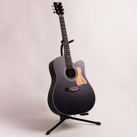
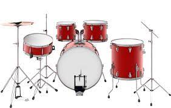
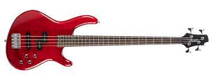
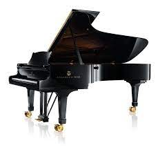

Berbagai Macam Alat Musik

Gitar
Gitar adalah sebuah alat musik berdawai yang dimainkan dengan cara dipetik, umumnya menggunakan jari maupun plektrum. Gitar terbentuk atas sebuah bagian tubuh pokok dengan bagian leher yang padat sebagai tempat senar yang umumnya berjumlah enam didempetkan. Gitar secara tradisional dibentuk dari berbagai jenis kayu dengan senar yang terbuat dari nilon maupun baja. Beberapa gitar modern dibuat dari material polikarbonat. Secara umum, gitar terbagi atas 2 jenis: akustik dan elektrik.
Drum
Drum adalah kelompok alat musik perkusi yang terdiri dari kulit yang direntangkan dan dipukul dengan tangan atau sebuah batang. Selain kulit, drum juga digunakan dari bahan lain, misalnya plastik. Drum terdapat di seluruh dunia dan memiliki banyak jenis, misalnya kendang, timpani, Bodhrán, Ashiko, snare drum, bass drum, tom-tom, beduk, dan lain-lain.
Bass
Gitar bas elektrik (biasa disebut gitar bas, bas elektrik atau bas saja) adalah alat musik dawai yang menggunakan listrik untuk memperbesar suaranya. Penampilannya mirip dengan gitar elektrik tetapi ia memiliki tubuh yang lebih besar, leher yang lebih panjang, dan umumnya memiliki empat senar (dibandingkan dengan gitar yang memiliki enam senar).
Piano
Piano (yang juga disebut pianoforte) adalah alat musik tuts yang diklasifikasikan sebagai instrumen dawai dan perkusi yang dimainkan dengan menekan tuts-tuts pada papan piano. Setiap tuts tersambung ke palu yang ada di dalam piano dan menekan senar di dalamnya, sehingga menghasilkan bunyi. Setiap senar memiliki panjang yang berbeda dan menghasilkan bunyi yang berbeda pula.
My Profile
Nama : Mochammad Erwin WIjanarko
Kelas : IF-6
NIM : 10121213